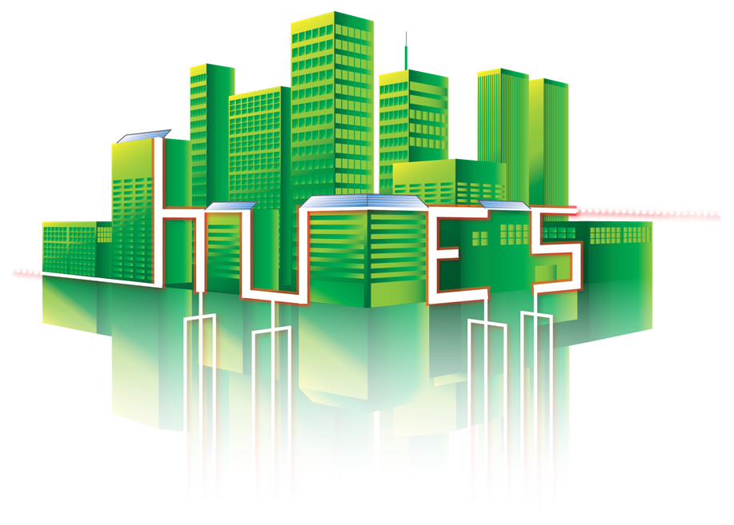
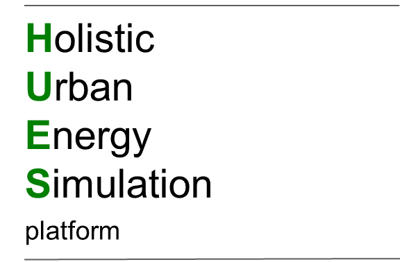

The Holistic Urban Energy Simulation (HUES) Platform is an open source ecology of computational resources to support distributed energy system (DES) design and control. By bringing together diverse computational resources reflecting cutting-edge DES research, we aim to accelerate research and facilitate effective deployment of DES. Resources in the HUES Platform include:
The Model repository includes a number of models for simulating and optimizing building- and district-scale energy systems. The code for these models is readily accessible, and may be used, downloaded and modified freely.
Access the model repository >>>
The Ehub Modeling Tool (beta version) is an open source tool for optimizing the design and operation of distributed multi-energy systems at the level of buildings and districts. The Ehub Modeling Tool is developed in Matlab and Aimms, and may be used, downloaded and modified freely.
Access the Ehub Modeling Tool >>>
The Swiss energy supply and demand web service includes aggregated yearly heat demand and solar rooftop PV potential in Switzerland, accessible at either the commune or pixel level. Access to the web service is restricted to participants in the SCCER FEEB&D project.
Access the Swiss energy demand and supply web service >>>
The DES data portal (beta version) includes data on the technical and economic properties of distributed systems, including DES technologies, DES cases and energy prices.
Access the DES data portal >>>
The Code repository includes a number of code snippets and scripts which may be useful to researchers dealing with the simulation and optimization of distributed energy systems.
Access the code repository >>>
See our External resources page for a list of externally developed/maintained models, databases and tools useful for research on distributed energy systems.
Access the external resources page >>>
Development of the HUES Platform is financially supported by the projects SCCER FEEB&D and CCEM SECURE.